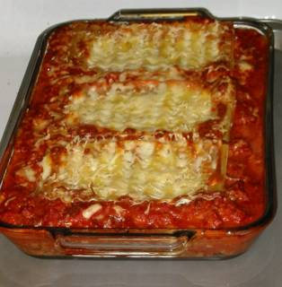

Lasagna

A quick approach to meat lasagna
This is a recipe for those that do not have willpower to spare on fancy instructions and presentation.
you will be given a time optimised recipe that will satisfy you tastebuds and ignore the visual since you dont need to look at your
food while eating and coding at the same time.
Ingredients
- 1 Tbs. (15 mL) olive oil
- 1 large (300 g) onion, chopped fine
- 6 large (25 g) garlic cloves, minced
- 1/2 lb. (225 g) ground beef
- 1/2 lb. (225 g) mild italian sausage, casings removed
- 1/2 tsp. (3 g) salt
- 1/2 tsp. (1.2 g) ground black pepper
- 1/4 cup (60 mL) heavy cream
- 28-29 oz. (794-822 g) puree tomatoes
- 28-29 oz. (794-822 g) diced tomatoes, drained
- 15 oz. (425 g) ricotta cheese
- 1-1/4 cup (100 g) grated Parmesan cheese
- 1-1/4 cup (100 g) grated Parmesan cheese
- 1 large (50 g) egg, beaten
- 1/2 tsp. (3 g) salt
- 1/2 tsp. (1.2 g) ground black pepper
- 12 oven ready lasagna pasta
- 16 oz. (455 g) mozzarella cheese
Steps
Sauce Phase
- Heat a large pan or pot over medium flame
- Pour 1 tablespoon oil into the heated pan
- After it begins to shimmer, put the finely chopped onions into the pan
- Cook for about two minutes, stirring occasionally, until the onions have soften
- Add garlic and cook for another two minutes
- Add the ground meat and increase heat to medium-high
- Add salt and pepper to taste
- Cook until the meat loses it's pink color, but not start to brown
- Stir in 1/4 cup heavy cream
- Allow the mixture to simmer and thicken
- Add a can of pureed tomatoes and a can of diced tomatoes (drained)
- After bubbles begin to form, lower the heat to low and cook for a few more minutes
Layers Phase
- put the ricotta cheese, a cup of parmesan (reserving 1/4 cup for use later), the chopped basil, beaten egg, and some salt and pepper into a medium bowl for mixing.
- Mix the ricotta and flavorings together with a fork
Impementation Phase
- Spoon the ricotta mix unto each pasta piece - about two tablespoons each. Distribute any excess evenly and flatten the ricotta onto each pasta piece.
- Apply a thin layer of meat sauce to the bottom of the baking pan
- Place three lasagna pasta (with the ricotta facing up) into the pan
- Cover the pasta with a fourth of the shredded mozzarella cheese
- Spoon enough meat sauce to cover the mozzarella and place another layer of lasgna pasta
- Repeat with mozzarella, meat sauce, lasagna, mozzarella, and meat sauce
- The top layer of pasta goes on the meat sauce, upside down
- Cover this layer with the remaining sauce
- Cover the top layer of red sauce with the remaining mozzarella cheese and then sprinkle the final 1/4 cup of parmesan on top
Baking Phase
- brush or spray some oil onto the foil
- Cover the top with aluminum foil
- Place the lasanga onto the middle rack in a preheated 375F (190C) oven for 15 minutes
- Remove the foil and continue baking for 25 more minutes
Serving Phase
- Allow the lasagna to cool for a few minutes
- Cut and serve 6 large portions